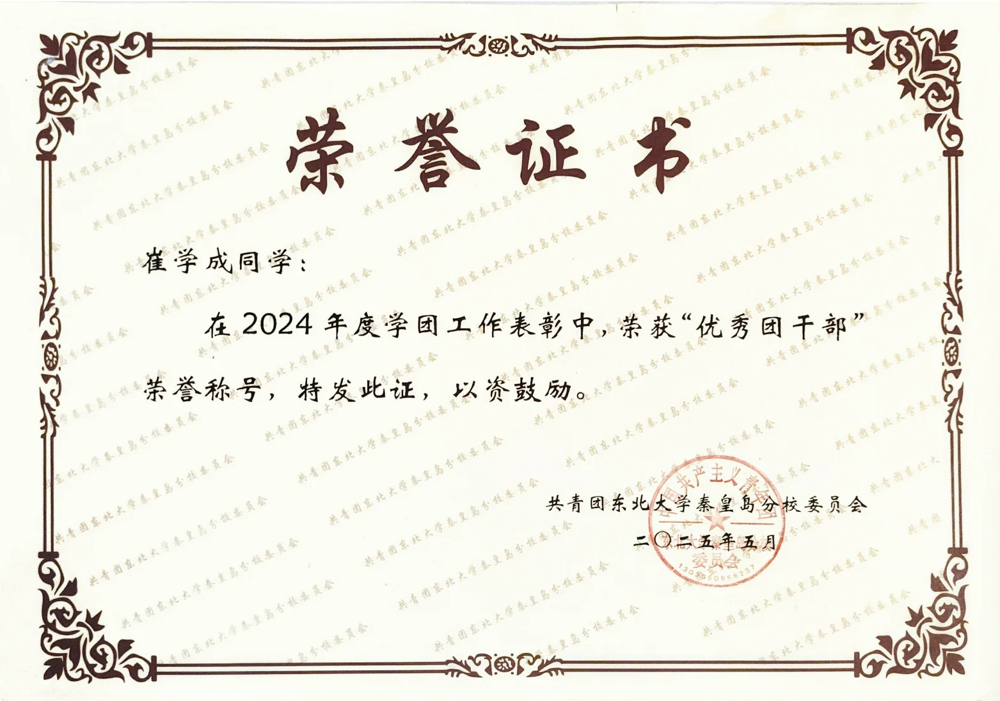
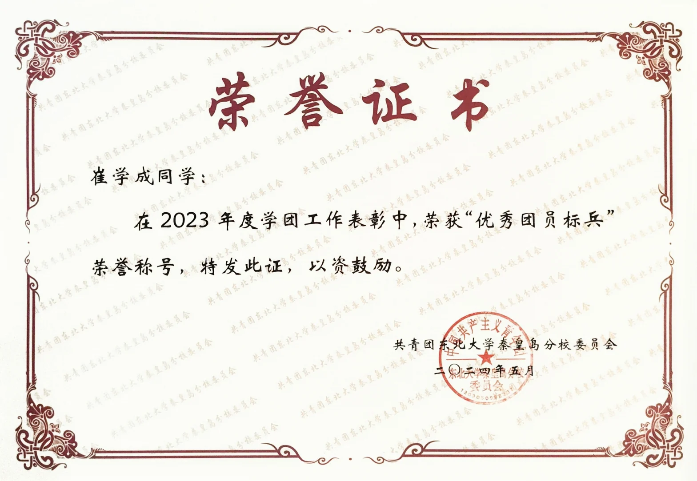
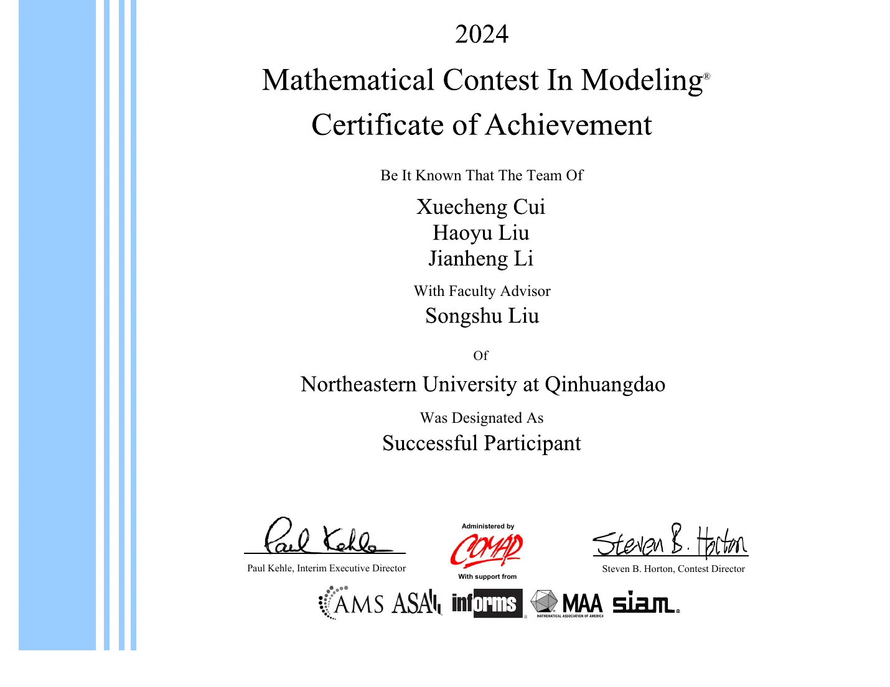
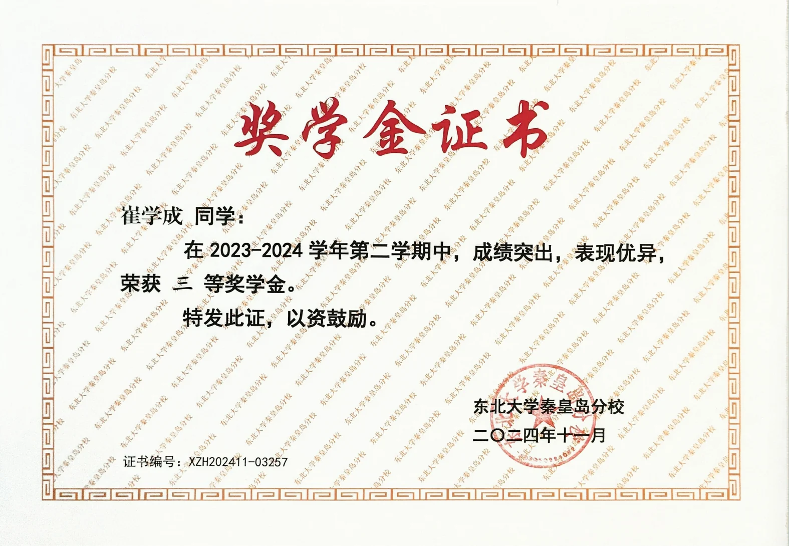
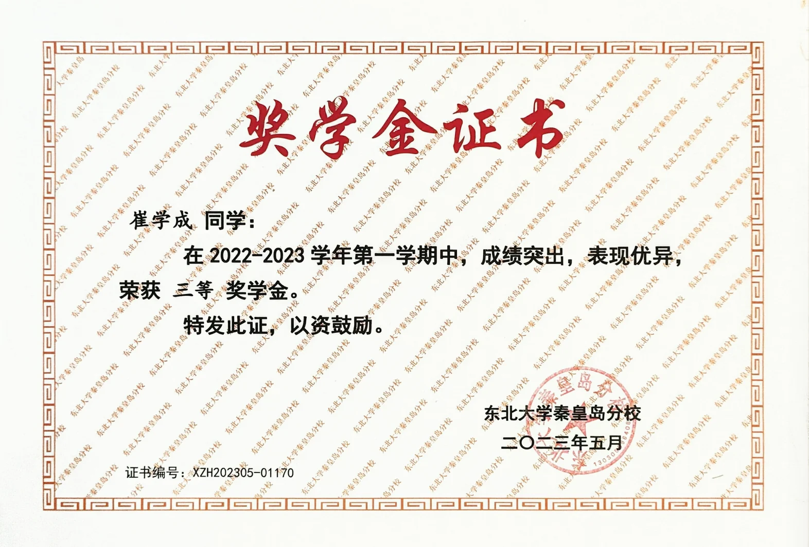
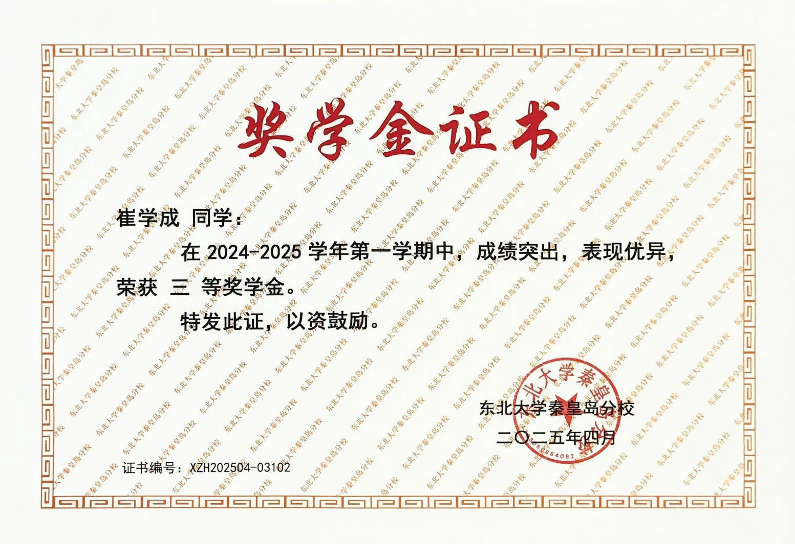
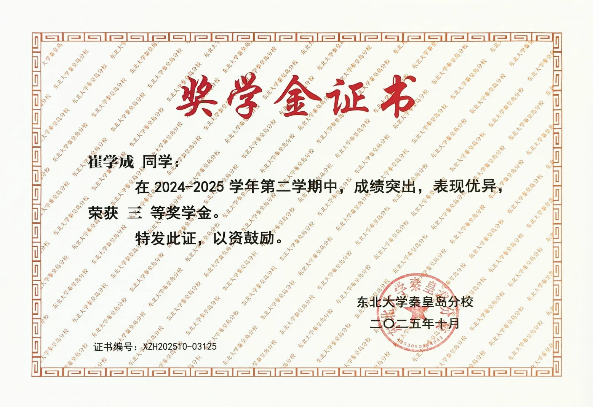
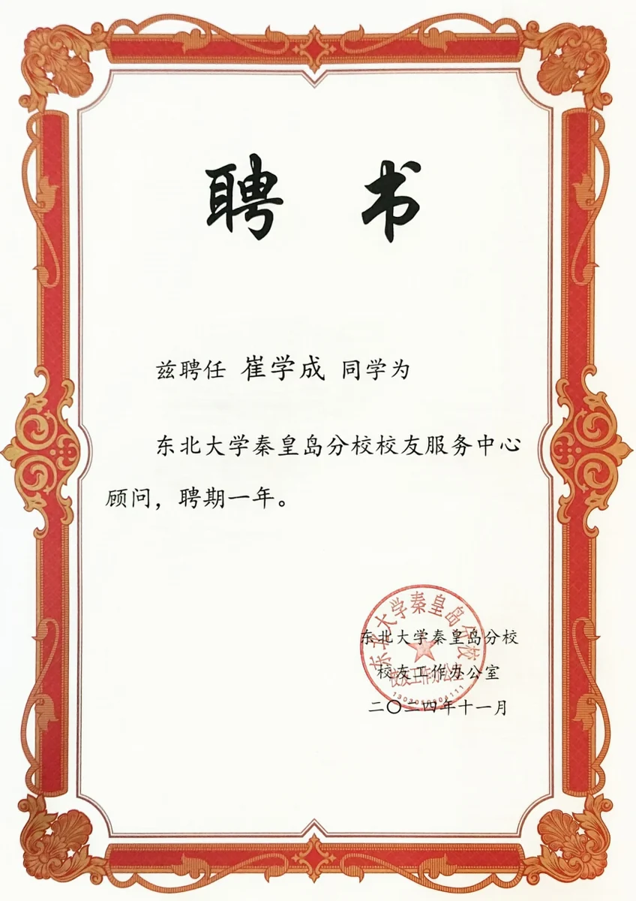

MailFlow 邮件智能体
用 LangGraph 编排邮件分类、回复生成与工具调用。在发送前加入人工审核，并探索跨会话的偏好记忆。
已跑通专用测试邮件的读取、审核、发送与已读标记流程；当前仍是学习与验证项目。
我是崔学成，目前在东北大学攻读计算机技术硕士学位。本科阶段学习计算机科学与技术，参与过文献语义检索与多目标推荐系统的项目实践。
近期，我在学习大语言模型应用，把知识库检索、工具调用和人工审核串联成可以运行的工作流。这里记录我的学习经历，也整理了 GitHub 上的代码与实验。
浏览近期实践 ↓硕士研究生 · 计算机技术
本科 · 计算机科学与技术
从模型训练到应用工作流。以下项目均链接至公开仓库，包含学习记录、实现代码与运行说明。
用 LangGraph 编排邮件分类、回复生成与工具调用。在发送前加入人工审核，并探索跨会话的偏好记忆。
已跑通专用测试邮件的读取、审核、发送与已读标记流程；当前仍是学习与验证项目。
将中文 Markdown 学习资料切分、向量化，让 Agent 按需调用检索工具，并根据返回的片段回答问题。
覆盖内存向量库与 Milvus 两种实现，支持终端多轮问答、来源返回和会话重置。
以 ERNIE 语义向量与 HNSW 索引召回候选文献，再用 Pairwise Matching 模型精排，串联两阶段检索流程。
项目实验记录：Recall@20 为 0.813，Ranking AUC 为 0.773。
结合深度兴趣网络、Transformer 与 MMoE 多专家结构，探索用户兴趣建模、特征工程与多任务推荐。
项目实验记录：加权 AUC 为 0.8185。仓库保留按周整理的课程练习与核心模型代码。
基于 learn-claude-code 的 s01–s04 学习整理：循环、工具分发、权限检查与 Hooks。
通过 Notebook 理解 StateGraph、状态定义、Reducer 与节点之间的数据流。
PyTorch 实现，涵盖模型训练、Beam Search 解码与 SentencePiece 分词。
第十六届 · 非数学 A 类
东北大学
校级荣誉称号
美国大学生数学建模竞赛
校级荣誉称号
2022–2023 学年度
2022–2023 学年校级荣誉
本科阶段累计 4 次
学习与实践留下的记录。点击图片查看完整证书。

优秀团干部
优秀团员标兵
MCM
校级奖学金
校级奖学金
校级奖学金
校级奖学金
校园服务欢迎交流学习经验、项目实现与新的想法。